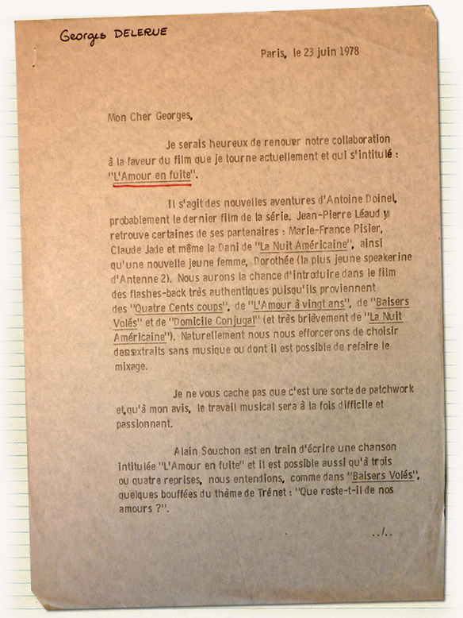

Cette page propose un encodage d'une lettre issue des archives de François Truffaut accompagnée de ses métadonnées
This letter is written by François Truffaut and addressed to Georges Delerue, his friend and french composer. This letter shows that François Truffaut asked Georges Delerue to work with him on the music for his new movie, "l'Amour en fuite". Truffaut gives a brief description of the film and its characters.
Je serais heureux de renouer notre collaboration à la faveur du film que je tourne
actuellement et qui s’intitule : “l’Amour en fuite”.
Il s’agit des nouvelles aventures d’Antoine Doinel, probablement le dernier film de la série.
Jean-Pierre Léaud y retrouve certaines de ses partenaires : Marie-France Pisier, Claude Jade et
même la Dani de “La Nuit Américaine”. Ainsi qu’une nouvelle jeune femme, Dorothée (la plus
jeune speakerine d’Antenne 2). Nous aurons la chance d’introduire dans le film des flashes-back
très authentiques puisqu’ils proviennent des “Quatre Cents coups”. De “l’Amour à vingt ans”. De
“Baisers Volés” et de “Domicile Conjugal” (et très brièvement de “La Nuit Américaine”).
Naturellement nous nous efforcerons de choisir des extraits sans musique ou dont il
est possible de
refaire le mixage.
Je ne vous cache pas que c’est une sorte de patchwork et qu’à mon avis, le travail
musical
sera à la fois difficile et passionnant.
Alain Souchon est en train d’écrire une chanson intitulée “L’Amour en fuite” et il est
possible ausi qu’à trois ou quatre reprises, nous entendions, comme dans “Baisers Volés”, quelques
bouffées du thème de Trénet : “Que reste-t-il de nos amours?”.
